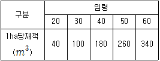
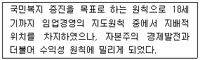

산림산업기사 (2015-05-31 기출문제)
1과목: 조림학
1. 다음 수종 중 완전화에 속하는 것은?
- 자귀나무
- 자작나무
- 버드나무
- 가래나무
(정답률: 74%)

2. 다음 중 종자 발아촉진제가 아닌 것은?
- 에틸렌
- 지베렐린
- 시토키닌
- 황화칼륨
(정답률: 74%)
3. 임목의 기원이 맹아이고 주로 연료생산을 위해 비교적 단벌기로 이용하는 것은?
- 교림
- 왜림
- 중림
- 죽림
(정답률: 81%)
4. 임지 보호 효과가 가장 큰 작업종은?
- 개벌작업
- 택벌작업
- 모수작업
- 왜림작업
(정답률: 83%)
5. 임목 종자 크기를 대립 또는 소립으로 나눌 때, 소립에 해당하는 것은?
- Ginkgo biloba
- Pinus densiflora
- Torreya nucifera
- Camellia japonica
(정답률: 74%)
6. 질소 결핍시 나타나는 증상으로 가장 두드러진 것은?
- 잎에 검은 반점이 나타난다.
- 성숙잎에 황화현상이 나타난다.
- 절간생장이 억제되고 잎이 작아진다.
- 새로 생장한 부분의 발육이 매우 불량하고 백화현 상이 나타난다.
(정답률: 74%)
7. 연중 종자 생산 시기가 가장 빠른 수종은?
- 주목
- 팽나무
- 회화나무
- 사시나무
(정답률: 58%)
8. 일반적으로 대부분의 침엽수 및 단풍나무류, 참나무류 등의 활엽수 생육에 가장 적합한 토양산도의 범위는?
- pH 4.0~4.7
- pH 4.8~5.4
- pH 5.5~6.5
- pH 6.6~7.3
(정답률: 77%)
9. 묘간거리가 2m인 정삼각형 식재 때의 1ha 당 묘본수는?
- 약 1,848본
- 약 2,283본
- 약 2,887본
- 약 5,132본
(정답률: 66%)
10. 묘목 가식에 대한 설명으로 옳지 않은 것은?
- 가식지 주변에는 배수로를 설치한다.
- 묘목의 끝이 남쪽을 향하게 하여 45도 경사지게 한다.
- 가급적 비가 오거나 또는 비가 온 후 바로 가식을 실시한다.
- 조림예정지가 원거리에 있거나 해빙이 늦은 지역은 조림예정지 부근에 가식 월동을 한다.
(정답률: 82%)
11. 천연갱신의 장점으로 옳지 않은 것은?
- 임지관리에 전문적인 육림기술이 불필요하다.
- 수종 선정의 잘못으로 조림에 실패할 염려가 없다.
- 임지가 나출되는 일이 드물고 지력유지에 적합하다.
- 인공 단순림에 비하여 각종 위해에 대하여 저항력이 크다.
(정답률: 79%)
12. 가지치기에 대한 설명으로 옳지 않은 것은?
- 일반적으로 가지치기 굵기의 한계는 6cm 정도이다.
- 소나무는 가지치기 상면이 유합하는데 3~4년 정도 걸린다.
- 가지치기 시기는 성장휴지기로서 수액유동 시작의 직전이 좋다.
- 수목의 수고생장에 따라 마디없는 우량재 생산을 위해서 실시한다.
(정답률: 52%)
13. 1-1 묘목에 대한 설명으로 옳은 것은?
- 1년생의 침엽수 묘목
- 한번 이식된 2년생 묘목
- 파종상에서 2년 지낸 묘목
- 대목이 1년생이고 접수가 1년생인 묘목
(정답률: 77%)
14. 소립종자의 실중에 대한 설명으로 옳은 것은?
- 종자 1립의 평균무게
- 종자 100립의 무게
- 종자 500립의 무게
- 종자 1,000립의 무게
(정답률: 85%)
15. 우량 묘목 조건으로 옳지 않은 것은?
- 측근과 세근의 발달량이 많을 것
- 가지가 사방으로 고루 뻗어 발달 한 것
- 온도 저하에 따른 고유의 변색과 광택을 가질 것
- 침엽수종의 경우 정아보다는 측아 발달이 우세한 것
(정답률: 78%)
16. 수목에 비료를 주는 작업에 대한 설명으로 옳지 않은 것은?
- 일반적으로 봄에 비료를 주는 것이 가장 좋다.
- 수확량점감의 법칙에 따라 일정량의 비료를 주어야 한다.
- 유기물이 적은 경사지는 비료를 준 뒤 큰 비가 와도 유실 우려가 없다.
- 늦여름에서 초가을 사이에 비료를 주면 웃자라 겨울에 피해를 입는다.
(정답률: 80%)
17. 도태간벌의 특성에 대한 설명으로 옳지 않은 것은?
- 장벌기 고급 대경재 생산에 유리하고 간벌목 선정이 유리하다.
- 우세목을 선발하는 무육벌채적 수단을 갖고 있는 간벌 양식이다.
- 미래목의 수관맹아 형성의 억제와 임분의 복층구조 유도가 용이하다.
- 미래목 사이의 거리는 최소 2m 이상으로 임지 내에 고르게 분포하도록 한다.
(정답률: 58%)
18. 흙을 비벼보거나 육안으로 보아 모래가 1/3이하를 차지하고 있다고 느껴지는 토양은?
- 양토
- 식양토
- 사질양토
- 미사질양토
(정답률: 47%)
19. 어떤 수목이 1000cc(1kg)의 물을 증산시켜 2g의 건물질을 생산하였다. 이에 대한 설명으로 옳지 않은 것은?
- 증산능은 1이다.
- 증산계수는 500이다.
- 증산비는 1:500이고, 1g의 건물질을 만드는 증산량은 500cc이다.
- 건물질의 단위량당 소비되는 물의 양을 요수량이라고 하며, 증산비 또는 증산계수로 나타낸다.
(정답률: 78%)
20. 토양 단면 중 A0층에서 볼 수 있는 H층(부식층)에 대한 설명으로 옳은 것은?
- 낙엽으로 된 층이며 원형 그대로 쌓여 있다.
- 풍화가 불완전한 층으로 집적층의 아래에 있는 층이다.
- 흑갈색의 유기물로 육안으로는 조직을 알 수 없고 대체적으로 산성이 강하다.
- 낙엽 등의 유기물이 다소 분해되었지만 육안으로 조직을 알 수 있는 상태이다.
(정답률: 63%)
2과목: 산림보호학
21. 천연기념물에 속하지 않는 조류는?
- 고니
- 크낙새
- 두루미
- 쇠딱따구리
(정답률: 65%)
22. 산림병해충 방제규정에 따른 나무주사에 의한 솔잎혹파리 방제효과 조사시기는?
- 방제 다음년도 5~6월
- 나무주사 후 5일 이내
- 방제 당해년도 10월 중
- 방제 다음년도 10월 중
(정답률: 67%)
23. 솔잎혹파리먹좀벌의 형태 및 생태특성에 대한 설명으로 옳지 않은 것은?
- 다포식 기생자이다.
- 1령 유충으로 월동한다.
- 2령 유충에서 번데기가 된다.
- 부화한 유충은 기주의 뇌 또는 중장에 기생하며 생활한다.
(정답률: 49%)
24. 수병의 방제를 위한 예방법과 가장 거리가 먼 것은?
- 숲가꾸기
- 임지 정리
- 환상박피 작업
- 건전한 묘목 육성
(정답률: 77%)
25. 균류에 의한 수병이 아닌 것은?
- 소나무 혹병
- 뽕나무 오갈병
- 잣나무 털녹병
- 밤나무 줄기마름병
(정답률: 71%)
26. 야생생물 보호 및 관리에 관한 법률에 지정되어 있는 멸종위기야생생물 I급에 해당되지 않는 포유류는?
- 여우
- 수달
- 호랑이
- 하늘다람쥐
(정답률: 61%)
27. 소나무 혹병을 발병하게 하는 것으로 중간기주에서 월동하고, 이듬해 봄에 형성되어 소나무로 날아가 혹을 만드는 것은?
- 자좌
- 녹포자
- 담자포자
- 녹병포자
(정답률: 56%)
28. 흡즙성 해충으로 옳지 않은 것은?
- 도토리거위벌레
- 솔껍질깍지벌레
- 버즘나무방패벌레
- 느티나무벼룩바구미
(정답률: 60%)
29. 내화력이 약한 수종으로만 나열된 것은?
- 소나무,삼나무
- 분비나무,회양목
- 사시나무,음나무
- 은행나무,잎갈나무
(정답률: 79%)
30. 모자이크병을 일으키는 병원체는?
- 세균
- 곰팡이
- 바이러스
- 원생동물
(정답률: 82%)
31. 윤작의 연한이 짧아도 방제의 효과를 올릴 수 있는 병균은?
- 낙엽송 모잘록병균
- 자주빛날개무늬병균
- 오동나무 뿌리혹병균
- 오리나무 갈색무늬병균
(정답률: 52%)
32. 어린 유충이 초본의 줄기 속을 식해하고 성장한 후 줄기 중심부에 갱도를 뚫으며 가해하는 해충은?
- 솔박각시
- 박쥐나방
- 오리나무잎벌레
- 소나무가루깍지벌레
(정답률: 63%)
33. 천막벌레나방의 유령기와 같이 나뭇가지 위에 모여 있는 동안에 이용하는 해충방제법으로 가장 적합한 것은?
- 동화 유살한다.
- 먹이로 유살한다.
- 벌레집을 제거하거나 소살한다.
- 땅에 비닐 천을 깔고 나무를 턴다.
(정답률: 66%)
34. 솔수염하늘소에 대한 설명으로 옳지 않은 것은?
- 유충으로 월동한다.
- 소나무재선충병 매개체이다.
- 주로 봄과 여름 사이에 산란한다.
- 주로 쇠약한 소나무의 가지를 후식 가해한다.
(정답률: 60%)
35. 산불을 인위적으로 적당히 활용하는 처방화입의 효용으로 옳지 않은 것은?
- 병충해를 방제 할 수 있다.
- 임지의 조부식층을 보존할 수 있다.
- 야생 목초의 질과 양을 개량시킨다.
- 일부 수종의 천연하종을 가능하게 한다.
(정답률: 75%)
36. 솔잎혹파리의 통상적인 우화시기는?
- 2월~4월
- 5월~7월
- 8월~10월
- 11월~1월
(정답률: 73%)
37. 낙엽송 잎떨림병에 대한 설명으로 옳지 않은 것은?
- 감염된 수목은 급격하게 말라죽는다.
- 숲 내부가 그늘지고 습한 경우 발생하기 쉽다.
- 만코제브 수화제 또는 4-4식 보르도액을 살포하여 방제한다.
- 가을에 수목 아랫가지에서부터 잎이 갈색으로 변하여 낙엽이 된다.
(정답률: 60%)
38. 병원체가 종자에 붙어서 월동하는 것은?
- 잣나무 털녹병균
- 소나무 모잘록병균
- 밤나무 줄기마름병균
- 오동나무 빗자루병균
(정답률: 42%)
39. 미국흰불나방에 대한 설명으로 옳지 않은 것은?
- 번데기로 월동한다.
- 어린 유충은 군서생활을 한다.
- 디플루벤주론 수화제로 방제한다.
- 2화기보다 1화기가 수목의 피해가 심하다.
(정답률: 68%)
40. 훈증제에 대한 설명으로 옳지 않은 것은?
- 해충이 접근하지 못하는 기능이 있다.
- 가스 상태로 해충의 기문을 통해 침투한다.
- 메틸브로마이드, 시안화수소가스 등이 있다.
- 토양훈증할 경우 지표면에 구멍을 뚫고 약물을 주입한다.
(정답률: 52%)
3과목: 임업경영학
41. 법정림의 수확량이 다음 표와 같고 산림면적은 360ha, 윤벌기는 60년 일 때 법정생장량(m3)은?

- 1930
- 2040
- 2150
- 2260
(정답률: 54%)
42. 임지기망가의 크기에 영향을 주는 인자에 대한 설명으로 옳지 않은 것은?
- 벌기가 클수록 임지기망가는 커진다.
- 이율이 높으면 임지기망가는 작아진다.
- 주벌 및 간벌 수확은 플러스(+)이며, 그 값이 클수록 임지기망가는 커진다.
- 조림관리비는 마이너스(-)이며, 그 값이 클수록 임지기망가는 작아진다.
(정답률: 58%)
43. 일반적으로 사용하는 원가 비교 방법이 아닌 것은?
- 기간비교
- 상호비교
- 표준실제비교
- 부가가치비교
(정답률: 64%)
44. 단목의 연령을 측정하는 방법에 관한 설명으로 옳은 것은?
- 목측으로도 나무의 크기게 관계없이 정확한 나무의 나이를 측정 할 수 있다.
- 기록에 의한 방법은 과거의 조림 기록에 의해 나무의 연령을 측정하는 방법이다.
- 지절에 의한 방법은 가지의 모양에 관계없이 가지의 수를 세어 연령을 파악할 수 있는 방법이다.
- 성장추를 이용하여 흉고부위에서 목편을 채취하여 연륜수를 파악하면 그것이 곧 그 나무의 연령이 된다.
(정답률: 73%)
45. 우리나라의 경우 대경목으로 분류하는 흉고직경의 크기는?
- 18cm 이상
- 28cm 이상
- 30cm 이상
- 45cm 이상
(정답률: 77%)
46. 다음 중 산림측량의 종류로 옳지 않은 것은?
- 주위측량
- 시설측량
- 구획측량
- 하해측량
(정답률: 67%)
47. 말구직경이 40cm, 재장이 5m인 국산재 통나무의 말구직경자승법에 의한 재적(m3)은?
- 0.628
- 0.800
- 0.840
- 1.000
(정답률: 53%)
48. 국유림경영계획을 위한 산림조사 항목에 대한 설명으로 옳지 않는 것은?
- 영급은 10년을 한 단위로 한다.
- 임령은 분모에 평균을 표시한다.
- 임종은 인공림·천연림의 구분이다.
- 소밀도는 조사면적에 대한 입목의 수관면적이 차지하는 비율을 백분율로 표시한다.
(정답률: 61%)
49. 다음 중 민유림의 의미로 옳은 것은?
- 사유림
- 국유림과 사유림
- 국유림과 공유림
- 공유림과 사유림
(정답률: 63%)
50. 산림경영임지의 확보, 임업기술개발 및 학술연구를 위하여 보존할 필요가 있는 국유림은?
- 학술국유림
- 필요국유림
- 보존국유림
- 요존국유림
(정답률: 53%)
51. 곰솔의 벌기가 35년이고 ha당 40000원씩의 순수입을 영구히 얻을 수 있는 임지의 자본가는? (단, 이율은 5%이며,(1.⑤)35 =5.516 임)
- 약 2000원
- 약 7300원
- 약 8900원
- 약 14000원
(정답률: 40%)
52. 개별원가계산방법에 대한 설명으로 옳지 않은 것은?
- 공정별 원가계산방법이라고도 한다.
- 주로 주문에 의하여 제품을 생산하는 경우에 많이 사용한다.
- 제품의 원가를 개개의 제품단위별로 직접 계산하는 방법이다.
- 소비자에게 제품의 원가와 일정한 이익을 합계한 제품가격을 청구하는데 도움이 된다.
(정답률: 72%)
53. 다음 설명에 해당하는 임업경영의 지도원칙은?

- 공공성의 원칙
- 생산성의 원칙
- 복지성의 법칙
- 합자연성의 원칙
(정답률: 66%)
54. 임목기망가의 설명으로 옳은 것은?
- 임목 생산 경비의 후가합계이다.
- 임목 생산 경비의 전가합계이다.
- 장차 기대되는 순수입의 후가합계에서 그동안 투입될 비용의 후가합계를 공제한 것이다.
- 장차 기대되는 순수입의 전가합계에서 그동안 투입될 비용의 전가합계를 공제한 것이다.
(정답률: 51%)
55. 임목 생장률 계산식이 아닌 것은?
- 단리산식
- Pressler식
- Brereton식
- Schneider식
(정답률: 57%)
56. 손익분기점 분석에 필요한 가정에 대한 설명으로 옳은 것은?
- 제품의 생산능률은 변함이 없다.
- 고정비는 생산량의 증감에 따라 변한다.
- 생산량과 판매량은 항상 같은 것은 아니다.
- 제품 한 단위당 변동비는 제품 생산이 늘어남에 따라 함께 증가한다.
(정답률: 71%)
57. 20m × 20m의 정방형 표준지에서 매목조사를 통하여 측정된 임목 본수는 60본인 경우, 해당 임분의 ha당 본수는 얼마로 추정되는가?
- 900
- 1200
- 1500
- 1800
(정답률: 69%)
58. 산림의 관리경영에 소요되는 관리비에 포함되지 않는 것은?
- 채취비
- 보험료
- 감가상각비
- 산림보호비
(정답률: 39%)
59. 다음 중 임목 직경 측정에 적합하지 않은 기구는?
- 포물선윤척
- 빌티모아스틱
- 아브네이레블
- 스피겔릴라스코프
(정답률: 50%)
60. 우리나라 수확표의 기준임령에서 지위지수의 결정 방법은 무엇인가?
- 토양의 환경인자에 의하여
- 임분의 우세목 평균수고에 의하여
- 임분의 우세목, 피압목의 평균수고에 의하여
- 임분의 우세목, 준우세목, 피압목의 평균수고에 의하여
(정답률: 75%)
4과목: 산림공학
61. 유심을 향하여 적당한 길이와 방향으로 돌출한 공작물로, 주로 유심의 방향을 변경시키기 위한 것은?
- 수제
- 돌댐
- 구곡막이
- 계간수로
(정답률: 65%)
62. 임도 비탈사면 돌쌓기에 대한 설명으로 옳지 않은 것은?
- 뒤채움 방법으로 허리채움, 꼬리채움, 옆채움 등이 있다.
- 찰쌓기를 할 때 석축 뒷면의 물빼기에 유의해야 한다.
- 돌의 배치는 여섯에움 이하로 하고 금기돌이 생기지 않도록 한다.
- 돌쌓기 기울기는 1:0.2 ~ 0.3 정도로 하되 토압 및 석재 품질에 따라 조정한다.
(정답률: 53%)
63. 유역 내의 평균강수량 산정법이 아닌 것은?
- 증발산법
- 등우선법
- 산술평균법
- Thiessen법
(정답률: 48%)
64. 벌목작업 시 벌도목이 인근 나무에 걸렸을 때 해결방법으로 가장 옳은 것은?
- 걸려있는 인근 나무를 베도록 한다.
- 걸치고 있는 나무를 벌도하여 함께 넘긴다.
- 걸린 나무에 올라가 흔들어 떨어뜨리도록 한다.
- 지렛대를 사용하여 걸린 나무를 돌려 낙하되도록 한다.
(정답률: 80%)
65. 양단의 단면적이 각각 50m2, 100m2이고 양단면 사이의 거리는 10m 일 때 양단면적 평균법에 의한 토적량으로 옳은 것은?
- 250m3
- 500m3
- 750m3
- 1000m3
(정답률: 69%)
66. 산림작업 노동재해의 원인으로 옳지 않은 것은?
- 인적 요인
- 물적 요인
- 경제적 요인
- 작업환경 요인
(정답률: 73%)
67. 계류보전사업에서 고려되어야 할 사항이 아닌 것은?
- 계류의 분류점과 합류점은 예각이 되도록 한다.
- 상류부에는 산지사방의 계간사방공사와 연계한다.
- 계안이나 제방을 보호할 곳은 기슭막이 시공을 해야 한다.
- 하류부에는 골막이 또는 사방댐을 설치하여 산각을 고정한다.
(정답률: 58%)
68. 수상운재 방법으로 목재를 묶지 않고 단목으로 띄워보내는 것은?
- 벌류
- 관류
- 위류
- 수수라
(정답률: 61%)
69. 임도 설계시 평면도에 나타나지 않는 것은?
- 곡선표
- 종단 기울기
- 구조물 위치
- 횡단점유면적
(정답률: 57%)
70. 산사태와 땅밀림의 차이점으로 옳지 않은 것은?
- 땅밀림은 강우 강도의 영향을 받는다.
- 땅밀림은 특정한 지질에서 많이 발생한다.
- 산사태는 땅밀림보다 규모가 작은 편이다.
- 산사태는 10mm/day 이상으로 속도가 대체로 빠른다.
(정답률: 55%)
71. 벌목의 계절을 선정 할 때 고려 사항으로 가장 거리가 먼 것은?
- 임분의 재적
- 시장 및 자금사정
- 생산재의 용도 및 품질
- 반출방법 및 기후조건
(정답률: 44%)
72. 산림 내 시험유역을 이용하여 유출 및 유역 물수지의 관계를 시험하는 것을 무엇이라고 하는가?
- 산림관리시험
- 산림이수시험
- 산림유출시험
- 유역 물수지시험
(정답률: 48%)
73. 설계속도 30km/h인 노면과 타이어의 마찰계수 0.16,노면의 횡단기울기가 4%인 경우의 최소 곡선반지름을 계산하면? (단, 법령상의 시설기준은 무시한다.)
- 약 15m
- 약 25m
- 약 35m
- 약 45m
(정답률: 50%)
74. 아스팔트 콘크리트 포장과 비교 할 때 시멘트 콘크리트 포장의 장점으로 옳지 않은 것은?
- 내용년수가 길다.
- 신뢰성이 큰 설계가 가능하다.
- 간단한 공법으로 유지수선이 가능하다.
- 미끄럼 저항의 변동이 적고 일반적으로 미끄럼이 적다.
(정답률: 52%)
75. 예불기에 장착된 안전장치 혹은 예불기 사용시 착용하는 안전장비로 옳지 않은 것은?
- 안전복
- 안전 커버
- 안면 보호망
- 자동 체인브레이크
(정답률: 75%)
76. 산지사방에서 분사식 씨뿌리기공법으로 시공시에 초본의 발아생립본수 기준은 m2당 몇본인가?
- 1000본
- 2000본
- 3000본
- 4000본
(정답률: 71%)
77. 육상 저목 방법으로 목재를 동일한 방향으로 목구를 가지런히 쌓아 올리는 방법은?
- 수평쌓기
- 가로쌓기
- 직각쌓기
- 평행쌓기
(정답률: 69%)
78. 우리나라 산지의 토양침식 형태로 옳지 않은 것은?
- 열침식
- 물침식
- 중력침식
- 바람침식
(정답률: 68%)
79. 임도 시설 중에서 대피소의 정의는?
- 벌도목 등을 쌓아두는 곳
- 산림 재해 발생시 대피하는 곳
- 임도시설에 필요한 기구를 보관하는 곳
- 임도에서 자동차가 서로 비켜가기 위한 장소
(정답률: 73%)
80. 임도의 옆도랑(측구)에 대한 설명으로 옳은 것은?
- 물이 임도를 횡단하여야 할 개소에 시설한 수로
- 노면의 물을 집수정으로 유도하기 위하여 시설한 수로
- 차량을 돌릴 수 있도록 시설한 장소의 횡단상의 수로
- 일정한 간격으로 차량통행에 지장이 없도록 횡단상의 수로
(정답률: 73%)